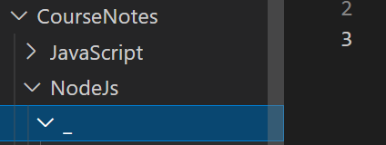

Streams are one of the fundamental concepts that power Node. js applications. They are data-handling method and are used to read or write input into output sequentially. Streams are a way to handle reading/writing files, network communications, or any kind of end-to-end information exchange in an efficient.
